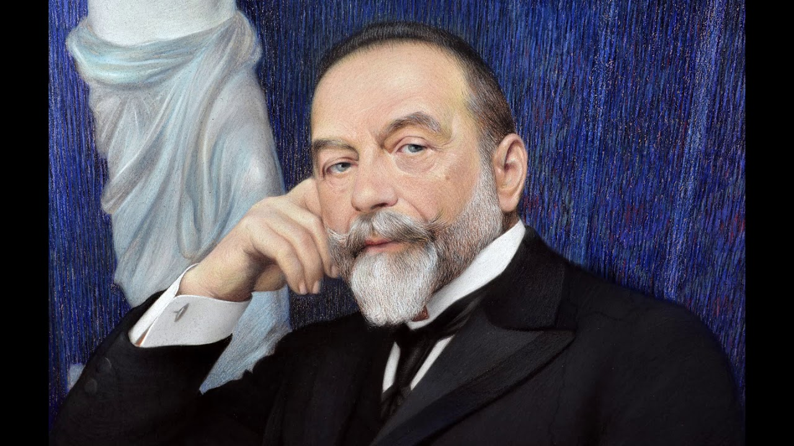

Fericiți pentru totdeauna? - PRwave - stiri afaceri, stiri marketing, case studies, stiri PR
 Home Services / Servicii Resurse Cursuri PR Publicitate Contact Violeta-Loredana PRwave Blog Home Business Auto Business Financial IT LifeStyle Politics PRwave Velo Marketing Events Media Public Relations Books Wave Advertising Afaceri Comunicare & PR Inocentul Marketing Timp liber Vanzari Exclusive Case Studies e-lumea Experts’ Opinion Expertiza internationala Expertiza locala International marketingFericiți pentru totdeauna?
4 September, 2020 4 September, 2020 by Violeta-Loredana Pascal Taylor Jenkins Reid
Editura Leda Edge
Laurel și Ryan au ajuns în punctul în care în loc de declarații de dragoste își fac declarații de război, își aduc acuze. Nu se mai înțeleg, par a nu mai putea face nimic împreună cu plăcere, au ajuns în punctul în care nu se mai iubesc.
Decizia lor?
O pauză de un an în care nu vor lua legătura deloc unul cu celălalt, în care vor trăi fiecare așa cum dorește. La finalul perioadei urmează să se întâlnească și să vadă cum se simt și ce ar dori: să rămână împreună sau să divorțeze.
Despărțirea este foarte grea, cu atât mai grea pentru Laurel care la doar câteva săptămâni după aceea își aniversează ziua de naștere, iar mama ei îi face o petrecere surpriză la care invită toți membrii familiei.
E oare atât de ușor să reziști un an fără a vorbi cu cel/cea cu care ai crezut că îți vei petrece tot restul vieții?
Vor reacționa Laurel și Ryan la fel?
Vor rămâne împreună sau se vor despărți?
Iată câteva întrebări care te fac să citești cartea cât de repede poți.
Deși este un roman din genul romance, povestea este foarte interesantă și actuală.
Laurel și Ryan s-au îndrăgostit la prima vedere în anul 2 de facultate. Iubirea lor a crescut constant, s-au căsătorit, s-au mutat într-o casă mai mare, și-au luat un câine.
Însă în relație au început să apară fricțiuni, șicane. Fiecare a început să-l aprecieze pe celălalt mai puțin și să vadă lucrurile doar din perspectiva proprie. Comunicarea a încetat, resentimentele au apărut, astfel că la peste 10 ani de la căsnicie Ryan și Laurel decid să ia o pauză.
În contextul în care foarte multe relații se destramă foarte repede în prezent, alegerea celor doi este una ce aduce în atenție angajamentul presupus de o căsnicie și dorința de a repara ceva frumos.
Cartea se citește ușor abundă în dialoguri, iar capitolele sunt scurte. Romanul aduce în atenție relația de cuplu, căsnicia și evoluția ei. Subiectul este împachetat în așa fel încât să fie ușor de digerat, însă tema este una serioasă, iar cartea a te face să te gândești la propria relație sau la ce îți dorești de la o relație în cazul în care ești singur/ă acum.
Fericiți pentru totdeauna? arată și cum poate reacționa o familie la auzul veștii unei separări. De asemenea, subliniază și faptul că traumele copilăriei nu trebuie să se perpetueze, că relația părinților nu înseamnă că este și relația copilului cu partenerul lui/ei.
Fericirea nu este ceva ce vine de la sine, iar o căsătorie nu aduce garanția fericirii pentru totdeauna. Fericirea vine cu muncă, respect, comunicare.
Posted in Books Wave , Timp liber Tagged casatorie , Fericiți pentru totdeauna , Fericiți pentru totdeauna? recenzie , Leda Edge , relatie de cuplu , romance , Taylor Jenkins Reid Prev FEDIAF lansează un ghid electronic de training dedicat comunicării cu privire la hrana animalelor de companie Next Matinalii Digi FM încep noul sezon din mijlocul pădurii
Leave a Reply Cancel reply
Search
Like us on Facebook
PRwaveRecent Articles
15 September, 2020 by Liliana KipperXPG lansează căștile de gaming PRECOG ANALOG
15 September, 2020 by Liliana KipperRomânia pierde 6,5 miliarde de euro din TVA, conform ultimului studiu al Comisiei Europene
15 September, 2020 by Liliana KipperA început Gaming Video Awards, competiție ce îi premiază pe cei mai buni și responsabili creatori de conținut de gaming din România
15 September, 2020 by Liliana KipperROG Phone 3 este disponibil în România
15 September, 2020 by Liliana KipperWantsome anunță Open Day LIVE, evenimentul dedicat românilor care vor să-și construiască o carieră în IT
15 September, 2020 by Liliana KipperUn IMM din România poate economisi anual până la 100.000 de euro, prin digitalizarea serviciilor de marketing și vânzări
Va recomandam:
PRwave
Publicitate pe PRwave Confidentialitatea datelor utilizatorilor PRwave.ro Termeni si conditii Cine, ce, cum & why CookiesToate drepturile rezervate. Copyright PRwave 2005-2020
PRwave - Violeta-Loredana Pascal
office [@] prwave.roAdresa corespondenta: Strada Perlelor, 8K, Bragadiru, jud. Ilfov
Sediu social: Str. Cap. Ilina, nr. 6, Bucuresti.
WordPress Theme | Viral by Hash Themes Acest site foloseste cookies pentru a imbunatati experienta utilizatorilor. Pentru a accesa site-ul si continutul sau trebuie sa fii de acord cu stocarea acestor informatii. Poti sa opt-out cand doresti. Accept Afla mai multe Privacy & Cookies Policy Close Necessary Always Enabled